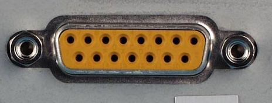
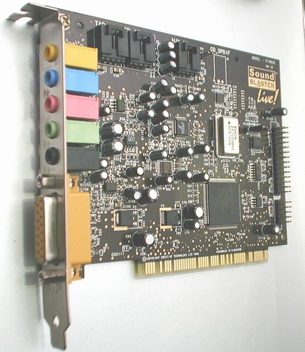
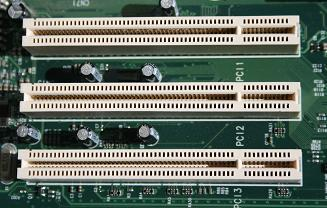
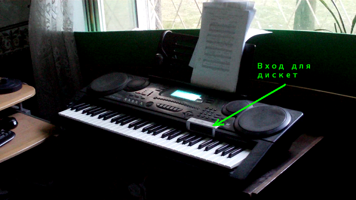
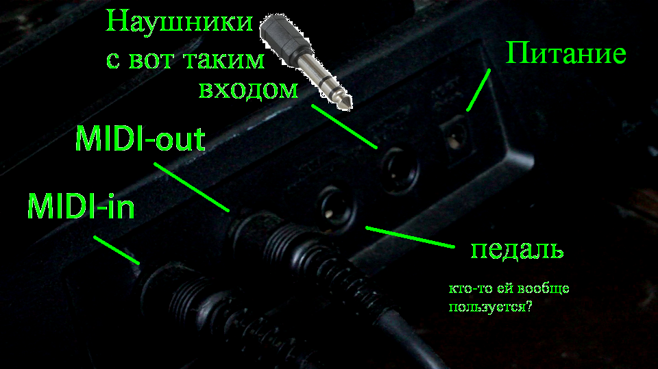
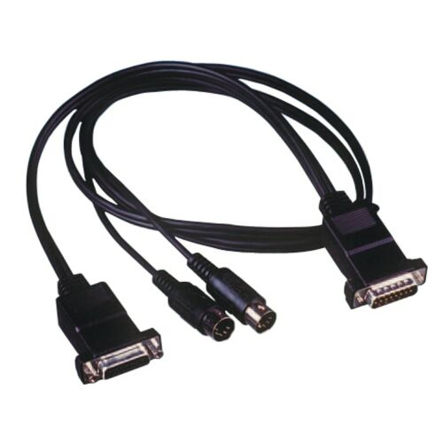
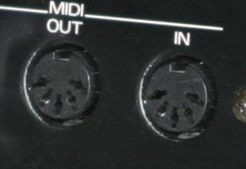

1. Для начала рассмотрим самый благоприятный и самый маловероятный случай - если в вашем компьютере есть Миди порт. Выглядит он примерно так:
Если он таки у вас есть - радуйтесь, вы свободны в выборе операционной системы! (хотя скорее всего в этом случае для чего-то тяжелее Windows XP ваш компьютер непригоден... и хорошо, семёрка маст дай). Однако ещё не вся ваша головная боль позади! Впереди ещё поиск шнура!
2. А вот если у вас такого порта нет, то у вас 4 пути. Я выбрал второй и третий, хотя сейчас, если бы передо мной был выбор, я бы выбрал 4:Выглядит она примерно так:
Вставляется в PCI гнездо (внутри компьютера):
Название модели можно узнать с помощью этой программы: http://rutracker.org/forum/viewtopic.php?t=3201085
А найти драйвера с помощью этого сайта: google.com Кстати, на семёрку и Линукс дров скорее всего не будет - юзайте ХР, она замечательная.
TODO: прогнаться по этому списку со своей аудиокартой и выложить ход работы
Естественно, проверить работоспособность карты мы сможем только когда у нас будет что в неё вставлять, поэтому...
Если вы это ещё читаете, значит скорее всего у вас старый синтезатор, вроде моего:
И все его гнёзда можно по пальцам сосчитать:
И подключать вы его будете чем-то таким:
Достать такой шнур может быть сложно. Я свой получил от дедушки, он этим всем занимался лет 10 назад. Идите, короче, туда, куда идут все, кому надо найти какие-то редкие шнуры.
Прямоугольная хрень вставляется в уже знакомый нам порт в компьютере, а кругляшки - сюда:
Когда что-то будет не работать - не забудте поменять кругляшки местами, наверняка поможет.
Благослови Господь душу чувака, который написал ту программу